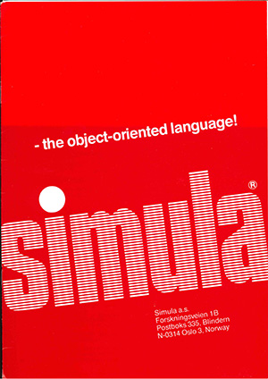

SIMULA was the first object language. As its name suggests it was used to create simulations. Alan Kay, who was at the University of Utah at the time, liked what he saw in the SIMULA language. He had a vision of a personal computer that would provide graphics-oriented applications and he felt that a language like SIMULA would provide a good way for non-specialists to create these applications. He sold his vision to Xerox Parc and in the early 1970s, a team headed by Alan Kay at Xerox Parc created the first personal computer called the Dynabook. Smalltalk was the object-oriented language developed for programming the Dynabook. It was a simulation and graphics-oriented programming language. Smalltalk exists to this day although it is not widely used commercially.
The idea of object-oriented programming gained momentum in the 1970s and in the early 1980s Bjorn Stroustrup integrated object-oriented programming into the C language. The resulting language was called C++ and it became the first object-oriented language to be widely used commercially.

In the early 1990s a group at Sun led by James Gosling developed a simpler version of C++ called Java that was meant to be a programming language for video-on-demand applications. This project was going nowhere until the group re-oriented its focus and marketed Java as a language for programming Internet applications. The language has gained widespread popularity as the Internet has boomed, although its market penetration has been limited by its inefficiency.